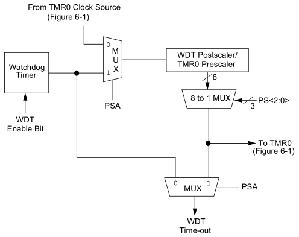

Episódio 25: Conhecendo o Watchdog Timer (WDT) e a instrução CLRWDT
Neste episodio veremos uma funcionalidade que é importante em aplicações que não podem travar por longos periodos, permintindo resetar a aplicação automaticamente.
Conforme datasheet (14.7 pagina 111) o Watchdog Timer (WDT) é um timer oscilador RC on-chip executando livremente, sem ligação com o oscilador principal.
Outro fato importanteé que o WDT varia conforme a temperatura por ser um oscilador RC, além de variar com a tensão de alimentação.
O WDT tem um periodo limite normal de 18 ms, sem uso do Prescaler associado a ele conforme comentados nos episodios 3 e 13.
Pode-se modificar o periodo limite de tempo do WDT, aplicando Prescaler. Assim conforme episodio 3, o bit responsavel por selecionar qual periferico recebe o Prescaler, sabe-se que se PSA = 1, o Prescaler é atribuido ao Watchdog Timer e posterior taxa de incremento pelos bits PS<2:0> do registrador OPTION_REG, baseando-se na Tabela 25.1.
| Tabela 25.1 - Periodo do WDT | |||||||||||||||||||||||||||||||||||||||||||||
|---|---|---|---|---|---|---|---|---|---|---|---|---|---|---|---|---|---|---|---|---|---|---|---|---|---|---|---|---|---|---|---|---|---|---|---|---|---|---|---|---|---|---|---|---|---|
|
|||||||||||||||||||||||||||||||||||||||||||||
| Fonte: xxxxxx |
O maior periodo limite é 128 * 18 ms = 2304 ms = 2,304 s.
Esse periodo é utilizado para reset caso o microcontrolador “trave”. Assim, se o Prescaler for 1:1, o periodo de reset por WDT é de 18 ms, necessitando resetar o periodo e para isso conheceremos a instrução CLRWDT.
A instrução CLRWDT limpa o Watchdog Timer não permitindo o timer estourar e resetar o microcontrolador.
Caso haja um reset por WDT, o bit TO do registrador STATUS será limpo por causa do Watchdog Timer. A Figura 25.1 exibe o diagrama de blocos do processo do WDT.
| Figura 25.1 - Diagrama de blocos de Watchdog Timer |
|---|
|  |
| Fonte: xxxxx |
A ativação dele é feita no cabecalho do arquivo do prorama episodio 2.
Agora se nouver necessidade de fazer isso em codigo é instração
| Código 25.1 - Ativacao do WDT |
|---|
BSF CONFIG, WDTE ; CONFIG esta no end. 0x2007 |
| Fonte: Autor 2020 |
Exemplo : COLOCAR UM EXEMPLO DE USO
Colocar o exemplo aqui